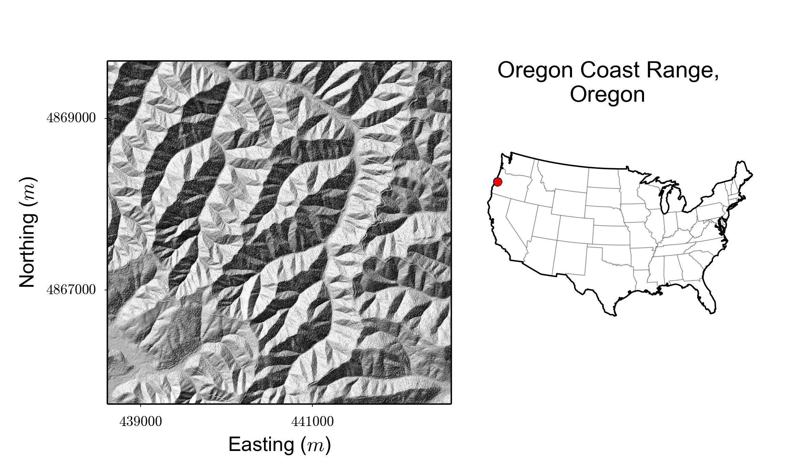
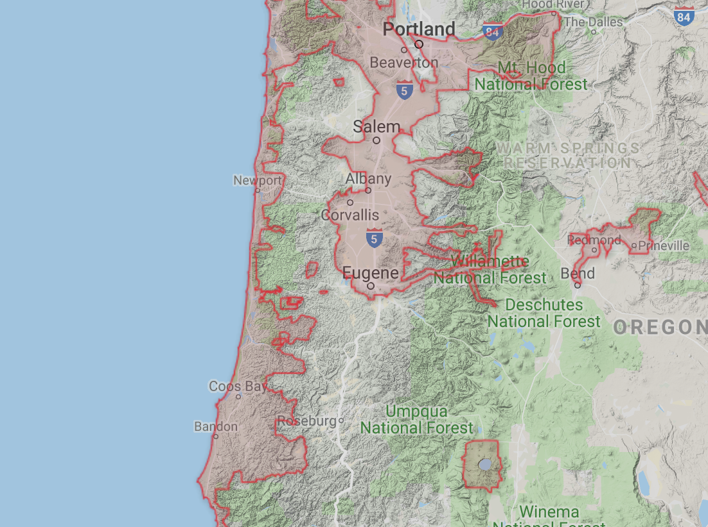

Topographic data is key to geospatial science
The data is (nearly!) all open
But people work on spatial subsets of the data
People cite the source dataset
And never share/publish the subset they use
Barrier to reproducibility
Create some tools to compile relevant metadata into a file:
Build upon OGC tools including RasterIO, Fiona, Shapely, GDAL, so could work in most languages.
Python
Javascript?
Metadata
Given a topographic dataset, press a button and get shareable metadata
Use this data to reconstruct the original topographic dataset from its source